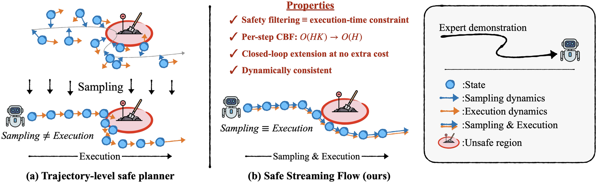
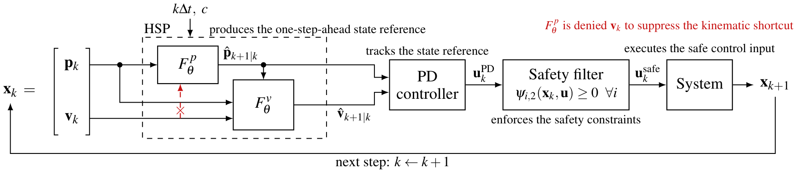
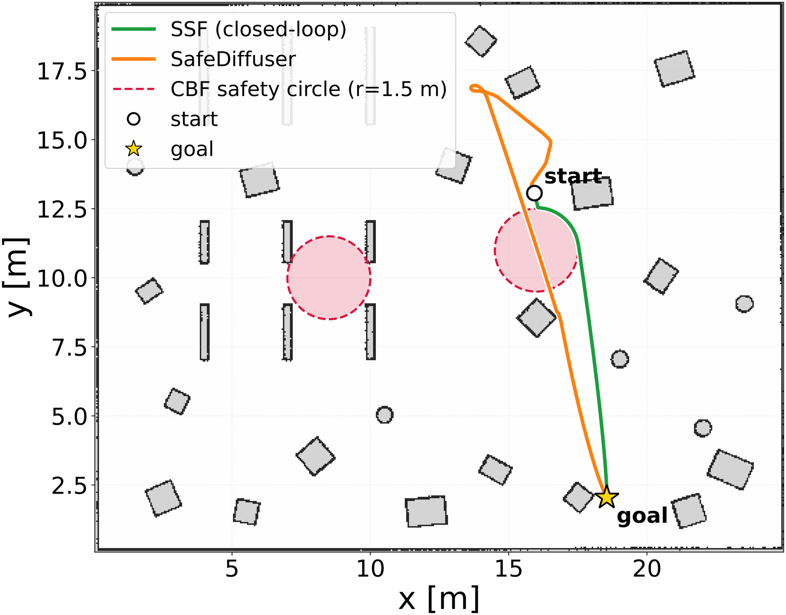
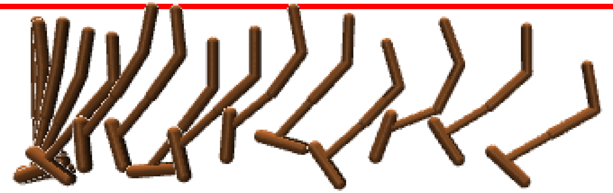

TL;DRWith control barrier functions (CBFs), safe generative planners enforce safety constraints at inference time, including constraints unseen during training. But they enforce them on the plan, and the robot's execution can still violate them. SafeStreamingFlow samples in execution time, so the safety filter acts on the step the robot executes.
Safe plans, unsafe execution
Safe diffusion and flow planners enforce CBF constraints on the generated plan. The executed trajectory can still violate them.
Why: sampling ≠ execution
These planners enforce safety on intermediate samples that the robot never executes.

Our method: sample in execution time
- Streaming flow: integrate a learned state vector field in physical time.
- Hierarchical state prediction: predict position, then velocity, so the planner follows the goal instead of extrapolating velocity.
- HOCBF filter on the executed input: O(H) optimization solves instead of O(HK).

Result: safe in execution
- Enforces safety in execution whenever a solution exists, with goal-reaching close to the unfiltered planner.
- Lower latency than trajectory-level safe planners.
Tested on Maze2D, F1TENTH, MuJoCo Hopper, and a Gazebo warehouse.

